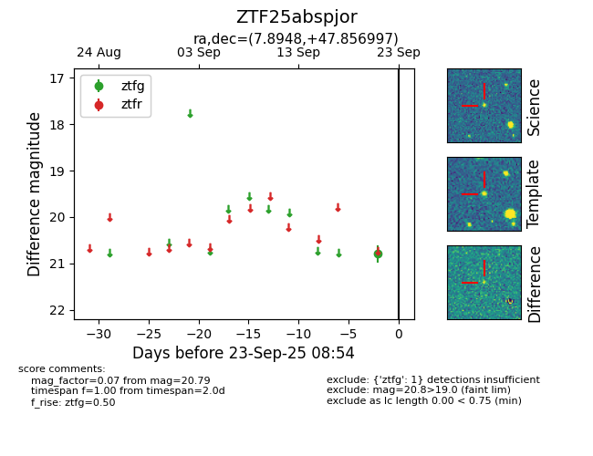

FINK: ZTF25abspjor
Lasair: ZTF25abspjor
ALeRCE: ZTF25abspjor
ZTF25abspjor (ztf,fink)
equatorial (ra, dec) = (7.8948,+47.85700)
galactic (l, b) = (119.4873,-14.88188)

last ztfg=20.79
1 ztfg detections